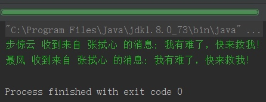
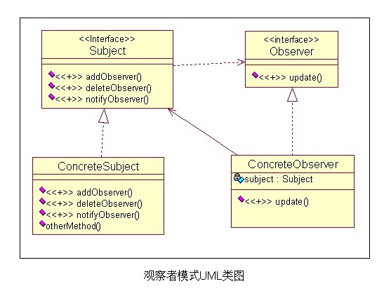

一. 举个栗子
假如你要加入斧头帮，做到一支穿云箭，千军万马来相见，响应大哥的号召，你要怎么做？
- 首先我得加入斧头帮，成为斧头帮一份子
- 然后去登记，有啥事方便通知
- 等老大一发穿云箭
- 我跟其他小弟就赶紧出现
二. 用代码实现一下：
1.首先定义 斧头帮老大 AxeGangBoss:
/**
* description: 斧头帮老大，消息发布者，继承 Observable
* <br/>
* author: shixinzhang
* <br/>
* data: 9/20/2016
*/
public class AxeGangBoss extends Observable {
private String mName;
public AxeGangBoss(String name) {
mName = name;
}
/**
* 在需要通知小弟的时候调用 setChanged()方法，表明有更新
* 然后提醒所有小弟
* @param msg
*/
public void sendMsg(String msg) {
//表示有更新
setChanged();
notifyObservers(msg);
}
public String getName() {
return mName;
}
public void setName(String name) {
mName = name;
}
}
斧头帮老大是消息发布者，当有情况时就调用 sendMsg(…) 方法给小弟发消息。他继承自 Java 源代码提供的 Observable ：
public class Observable {
List<Observer> observers = new ArrayList<Observer>();
boolean changed = false;
public Observable() {
}
public void addObserver(Observer observer) {
if (observer == null) {
throw new NullPointerException("observer == null");
}
synchronized (this) {
if (!observers.contains(observer))
observers.add(observer);
}
}
protected void clearChanged() {
changed = false;
}
public int countObservers() {
return observers.size();
}
public synchronized void deleteObserver(Observer observer) {
observers.remove(observer);
}
public synchronized void deleteObservers() {
observers.clear();
}
public boolean hasChanged() {
return changed;
}
public void notifyObservers() {
notifyObservers(null);
}
@SuppressWarnings("unchecked")
public void notifyObservers(Object data) {
int size = 0;
Observer[] arrays = null;
synchronized (this) {
if (hasChanged()) {
clearChanged();
size = observers.size();
arrays = new Observer[size];
observers.toArray(arrays);
}
}
if (arrays != null) {
for (Observer observer : arrays) {
observer.update(this, data);
}
}
}
protected void setChanged() {
changed = true;
}
}
Observable 里保存着一个 Observer 的集合，然后提供了添加、删除、提醒等方法。其中重要的是 notifyObservers(…) 方法，当确定出事了（changed 为 true）时 ，挨个通知小弟。
Observer 是一个接口，规定了小弟收到消息的方法 update(…)：
public interface Observer {
void update(Observable observable, Object data);
}
2.定义斧头帮小弟 AxeGangPeople，小弟需要按规矩来，实现 Observer 接口:
/**
* description: 斧头帮小弟，订阅者，实现 Observer 接口
* <br/>
* author: shixinzhang
* <br/>
* data: 9/20/2016
*/
public class AxeGangPeople implements Observer {
String mName;
public AxeGangPeople(String name){
mName = name;
}
/**
* 必须实现的方法，当消息发布者发出通知后，会调用这个方法
* @param observable
* @param data
*/
@Override
public void update(Observable observable, Object data) {
AxeGangBoss writer;
if (observable instanceof AxeGangBoss) {
writer = (AxeGangBoss) observable;
System.out.println(getName() + " 收到来自 " + writer.getName() + " 的消息: " + data.toString());
}
}
public String getName() {
return mName;
}
public void setName(String name) {
mName = name;
}
}
3.然后小弟去老大那登记，老大有消息了就射穿云箭：
@Test
public void testSendMsg() throws Exception {
//创建一个斧头帮老大
AxeGangBoss shixinzhang = new AxeGangBoss("张拭心");
//创建两个小弟
AxeGangPeople niefeng = new AxeGangPeople("聂风");
AxeGangPeople bujingyun = new AxeGangPeople("步惊云");
//老大觉得可以，收入麾下
shixinzhang.addObserver(niefeng);
shixinzhang.addObserver(bujingyun);
//老大出事了，赶紧射箭！
shixinzhang.sendMsg("我有难了，快来救我！");
}
4.运行结果：

这种 一对多的通知场景 就是传说中的观察者模式。
三. 观察者模式
1.定义：
又称“发布-订阅模式”，定义了一种一对多的依赖关系，一个被观察者持有多个观察者对象的引用，当被观察者状态发生改变时，通知所有观察者进行更新。
2.UML 图

其中 Subject 是被观察者接口，即上文提到的 Observable ，持有一个观察者接口集合的引用，定义了观察者的添加、删除以及提醒；
ConcreteSubject 实现了被观察者接口，即上文的斧头帮老大 AxeGangBoss，在一定情况下提醒观察者更新；
Observer 是观察者抽象类，定义了更新 update 方法；
ConcreteObserver 是具体观察者，即上文的小弟 AxeGangPeople，重写 update 方法，进行触发操作。里面有时需要持有一个 Subject 的引用。
3.场景：
有的时候一个状态值会影响许多逻辑，比如电商类软件的位置信息，如果用户切换位置，需要显示对应城市的商品信息、活动、附件的人等等，这时使用观察者模式可以减少对应模块的代码逻辑，直接写好回调方法，等待被回调就好，耦合度降低很多。
转载自：http://blog.csdn.net/u011240877/article/details/52683558